<
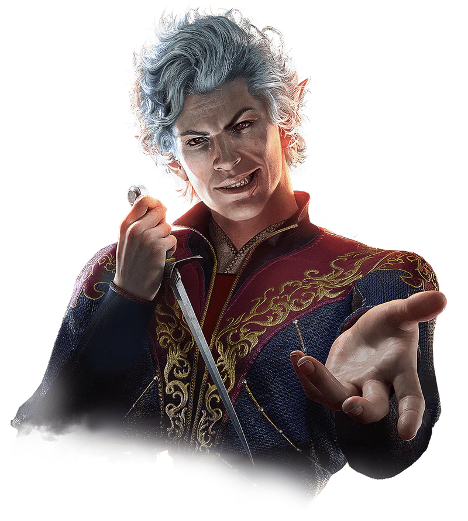
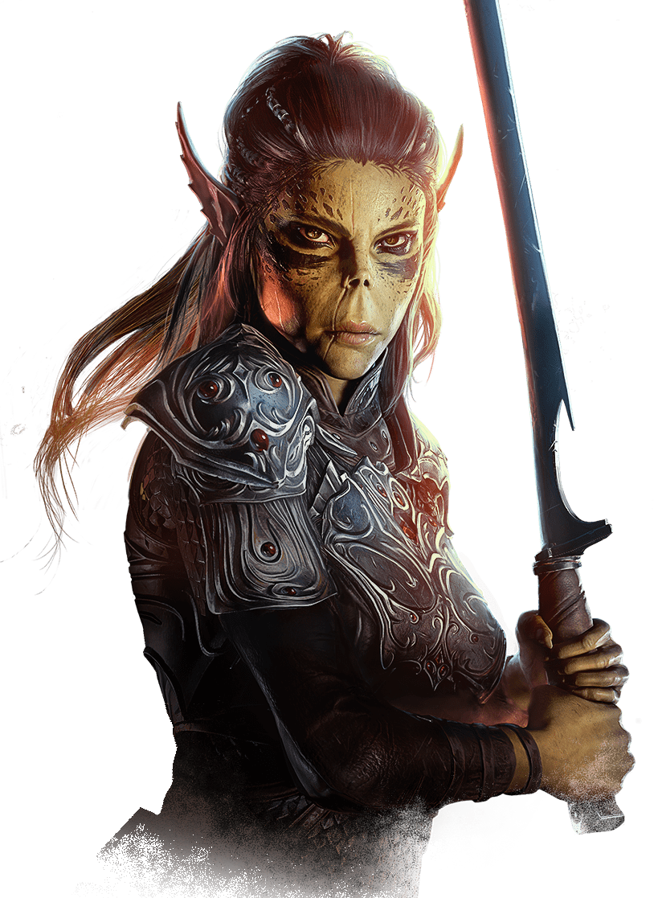
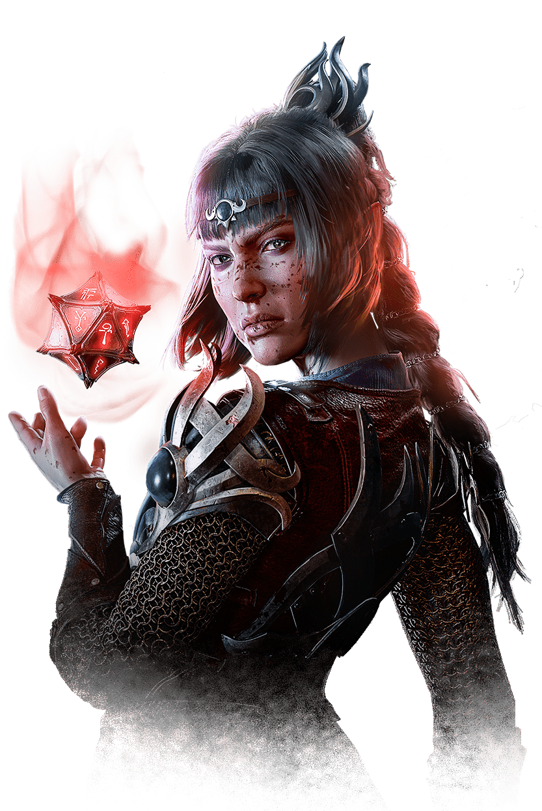
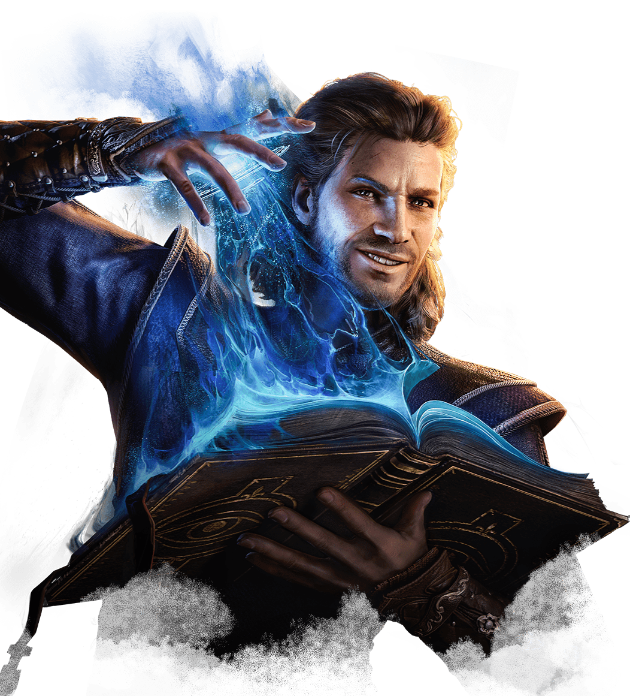

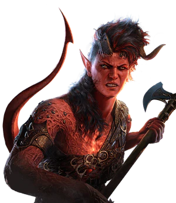
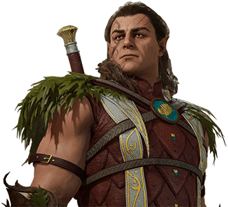
>
Builds e as suas variacoes para personagens controlaveis dentro de Barduls Gate 3.
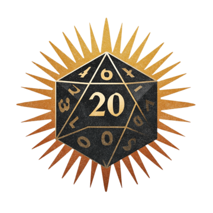
<






>
Alto elfo(High Elf)
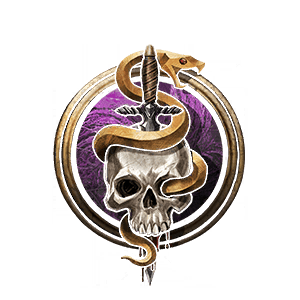
Ladino
assassino
level 5
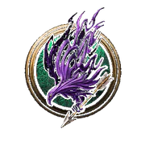
patrulheiro
gloom stalker
level 5
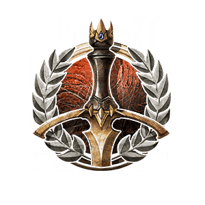
guerreiro
Mestre de Guerra
level 2
Foco em Furtividade e Talento: Atirador de Elite.
Ataque Extra e Emboscador Temível.
Surtar Ação e Crítico Aprimorado.
Githyanki
guerreira
Mestre da batalha
level 12
Estilo: Grande Arma. Talento: Mestre de Grandes Armas.
Ataque Extra e Manobras: Derrubar e Empurrar.
3º Ataque por Ação e Indomável (Rerrolar testes).
Alto elfo
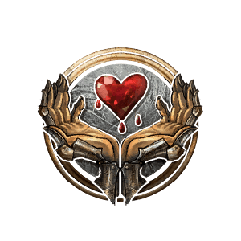
Clerica
Dominio da vida
level 12
Discípula da Vida (Cura aumentada) e Talento: Conjurador de Guerra.
Magia: Guardiões Espirituais e Golpe Divino (Radiante).
Cura em Grupo Preservar a Vida e Magia: Convocar Plano.
Humano
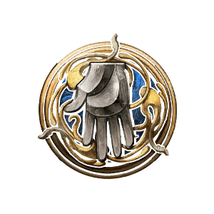
Mago
Escola de Evocação
level 12
Esculpir Feitiços e Talento: Conjurador de Guerra ou +2 Int.
Magias: Bola de Fogo, Contrafeitiço e Truques Potencializados.
Evocação Potencializada (Soma bônus de Inteligência no dano).
Tierfling
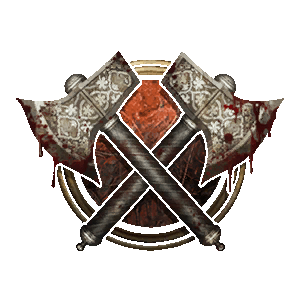
Barbara
Berserker
level 12
Fúria Frenética e Talento: Mestre de Armas de Haste ou +2 Força.
Ataque Extra, Movimento Rápido e Talento: Arremessador de Elite.
Crítico Brutal e Fúria Destemida (Não pode ser amedrontada).
Elfo da floresta
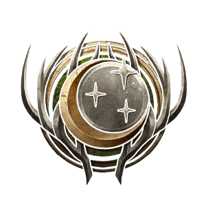
Druida
Circulo da Lua
level 12
Formas: Urso e Corvo. Talento: Combatente de Taverna (Melhora acerto em forma selvagem).
Ataque Extra (Forma Selvagem) e Formas: Pantera e Urso-Coruja.
Formas de Myrmidon Elemental e 3º Ataque em Forma Selvagem.